Best of both worlds: Combining Qt Designer and magicgui#
This blog post will give you a quick introduction on how to combine two great tools for the creation of graphical user interfaces in napari: The Qt Designer and magicgui. A good place to get started with each are the following blog posts by myself and Marcelo Zoccoler:
Why use Qt Designer and magicgui?#
While both tools are great to work with by themselves, each has functionality which the other can not cover. The Qt Designer is a great tool to design and customize complex graphical user interfaces (GUIs) without having to write any actual code. Magicgui on the other hand is a great tool to create widgets that interact very natively with napari - without going through the effort of actualy designing the GUI by code: Magicgui will do so by itself.
A case you may find yourself unable to do with both tools by themselves is the following - which we will demonstrate how to solve in this tutorial. You want to design a complex user interface for a napari plugin, that requires a large number of input parameters. In particular, one of these parameters should be an input image. The latter is quite easy in magicgui:
@magicgui()
def my_complext_function(image: 'napari.types.ImageData') -> 'napari.types.ImageData':
# some complex code
return output_image
… and that’s it - the magicgui decorator will turn this piece of code into a plugin and automatically finds all eligible input image layers in the napari viewer which can be processed by this function. Designing a widget for this function in the Qt Designer can be a bit tricky.
On the other hand, consider the following case: You have two functions, that require access to a single parameter, such as the follows:
def first_function(image: 'napari.types.ImageData') -> 'napari.types.ImageData':
some_global_parameter = 5
return output_image
def second_function(image: 'napari.types.ImageData') -> 'napari.types.ImageData':
some_new_parameter = some_global_parameter + 5
return output_image
Doing this without a Qt plugin is hard to do, as you would have to pass the parameter some_global_parameter to the second function. Hence, you’d have to create a Qt Widget (which can keep some internal variables) - but you cannot easily use magicgui to create dropdowns in that widget and select input images. Hence, let’s combine the two!
How to combine Qt Designer and magicgui#
As a starting point, we create a custom widget in the Qt Designer. If you use Anaconda, it comes along with the software and can simply be opened in any environment by typing designer in the command terminal. If you use a different Python distribution, you can download the Qt Designer here.
Designing the widget in the designer#
When you start the designer, start by creating a new blank widget and click Create:
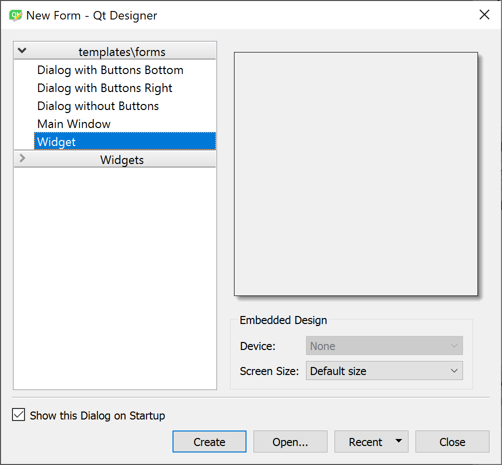 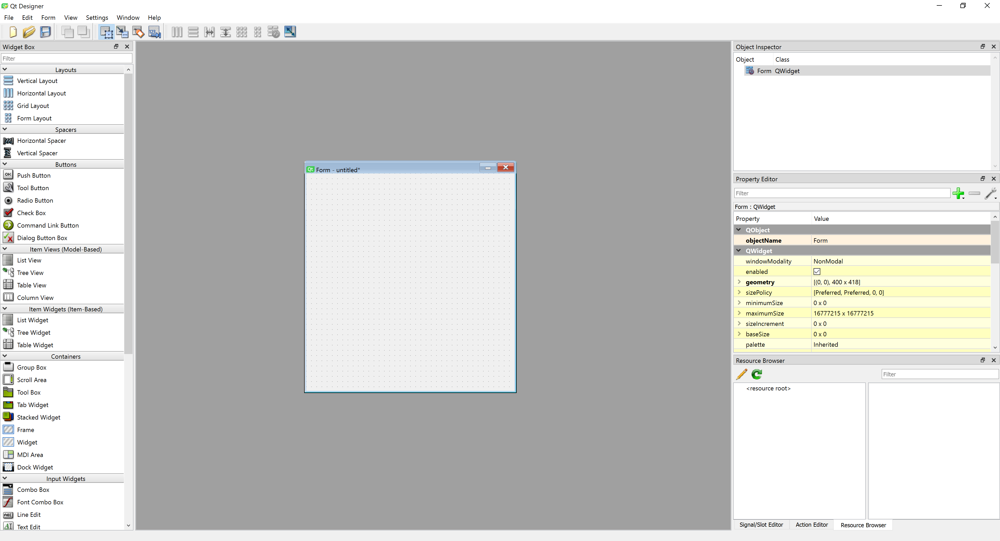
we can now start to fill the blank widget with content: The bar on the left shows all available widgets at your disposal. In our case, let’s add a few elements such as a slider, a label and a button. To highlight the level of complexity we can achieve, we embed both in a Tab widget. The result could look like this:
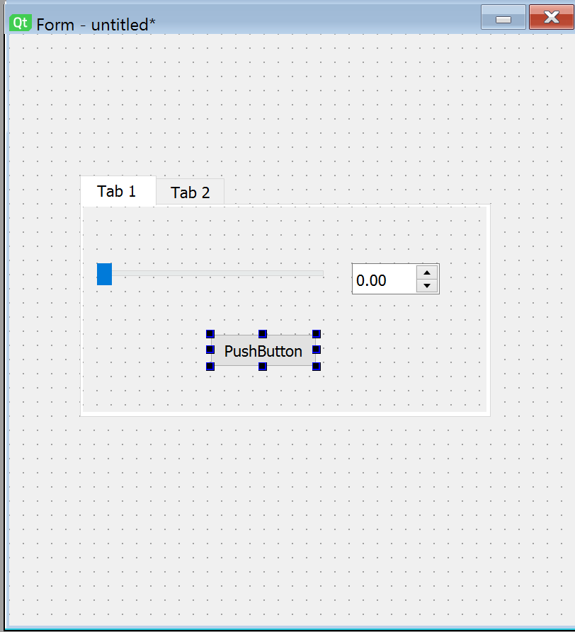
This directly introduces a key strength of the Qt designer: Arranging widgets in layouts is very easy here. Doing so allows widgets to be automatically scaled in size as the window is resized. This is a very useful feature, as it allows to create GUIs that are usable on different screen sizes. In our case, we have created a layout that will scale the slider and the label with the window size, and also keep the button at the same size as the two widget elements above. To add a layout, we simply click into the tab widget and select a Box layout from the available layouts:
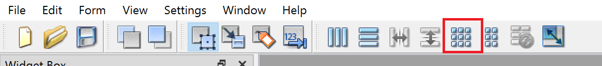
The result is a layout that will automatically scale the slider, the button and the label with the window size.
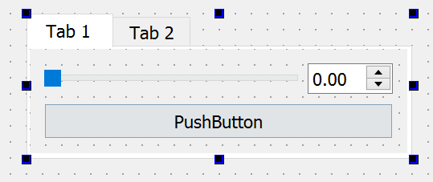
Another cool thing you can just do in the Qt designer, is the use of Spacers: Image your widget being stretched very far in the vertical direction, but remaining small in the horizontal direction - you may want your widget elements to stay on the top of the widget in this case. Spacers can do that - find them on the Qt Designers’s left sidebar under the Spacers tab:
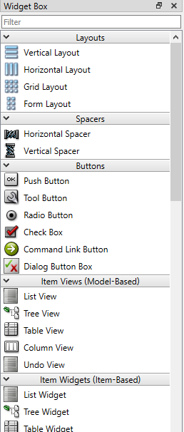
To use them, simply drag and drop the vertical spacer into the layout. You’ll find that by default, the spacer expands and thus moves all other widgets in the respective direction above or below itself. The same works for horizontal spacers. The result could look like this:
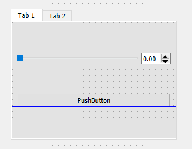 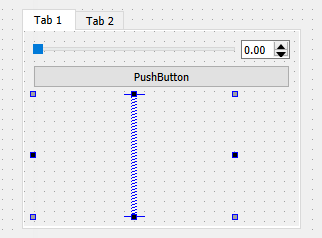
Last but not least, we need to add a layout to the widget itself (not just to the area inside the tab widget). To do so, click on the widget background and select a layout from the available layouts as before. This time, we chose the vertical layout. We then add another vertical spacer at the bottom of the widget.
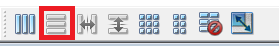
The final result should look like this:
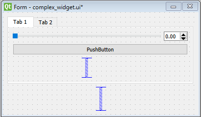
Before we can use the widget from python, we need to make some final choices in the Qt Designer. For instance, we need to know how we can find each of the widgets later from Python code. To do this for every widget, select it and have a look on the right sidebar. If we select the slider, we can see the following:
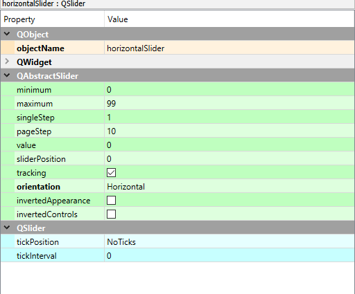
The widget’s objectName is currently set to be horizontalSlider. We can change this to whatever we want, but we need to remember this name later. In our case, we will change it to horizontal_slider_widget.
The menu furthermore allows you to set default, minimum and maximum values for the slider widget - each of which would be accessible from Python later with another line of code, which can become very tedious for many widgets. The pageStep is a cool feature that indicates the order by which widgets will be selected if the tab key is pressed - the cursor will then jump from widget to widget in the order indicated by the pageStep. Additional settings regarding the layout of the respective selected widget can be done under the QWidget tab, such as a minimum height and width of the widget, tooltip messages and more.
After making your changes, we can then save the widget as a .ui file by clicking File -> Save As... and selecting the .ui file format. Let’s call it complex_widget.ui.
Using the widget from Python#
To use the created widget in python and napari, create a Python file – let’s call it my_custom_widget.py in the same folder as the .ui file and add the following code:
from qtpy.QtWidgets import QWidget
from qtpy import uic
from pathlib import Path
class my_custom_widget(QWidget):
def __init__(self, napari_viewer):
super().__init__()
# load the .ui file from the same folder as this python file
uic.loadUi(Path(__file__).parent / "./complex_widget.ui", self)
… and that’s already all you need to know to create the widget! In order to show the widget in the napari viewer, create a Jupyter notebook in the same location and run the following code:
import napari
from my_custom_widget import my_custom_widget
viewer = napari.Viewer()
widget = my_custom_widget(viewer)
viewer.window.add_dock_widget(widget, area="right")
which will display the designed widget in napari:
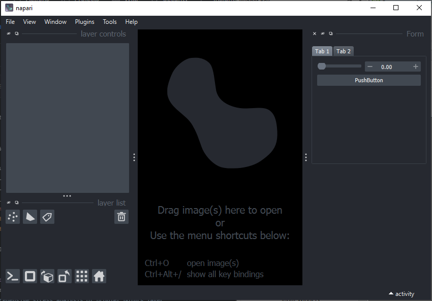
Note that you can access all previously added widgets from Python by widget.name_given_to_widget_in_desginer. For instance, we can access the slider widget we created earlier by widget.horizontal_slider_widget ( or self.horizontal_slider_widget from inside the widget class). Let’s see all of this in action:
Adding a magicgui widget to a custom widget#
We now want to add a magicgui widget to the widget we just created. We can create magicgui widgets with this simple code snippet:
from magicgui.widgets import create_widget
from napari.layers import Image
image_layer_select = create_widget(annotation=Image, label="Image_layer")
image_layer_select now contains a ready-to-use magicgui widget. We now want to insert the newly created image_layer_select into the widget created in the designer. We can do so by amending the __init__ function of our custom widget and add another function - the eventFilter - to make sure that the magic of magicgui still works. For more details, see this discussion on image.sc and this github issue.
from qtpy.QtWidgets import QWidget
from qtpy.QtCore import QEvent, QObject
from qtpy import uic
from pathlib import Path
class my_custom_widget(QWidget):
def __init__(self, napari_viewer):
super().__init__()
self.viewer = napari_viewer
uic.loadUi(Path(__file__).parent / "./complex_widget.ui", self)
# add magicgui widget to widget layout
self.image_layer_select = create_widget(annotation=Image,
label="Image_layer")
self.layout().insertWidget(0, self.image_layer_select.native)
self.installEventFilter(self)
def eventFilter(self, obj: QObject, event: QEvent):
if event.type() == QEvent.ParentChange:
self.image_layer_select.parent_changed.emit(self.parent())
return super().eventFilter(obj, event)
Let’s change our notebook code from above slightly to use the new widget. The result is a new magicgui widget showing up at the top of our widget - and as we specified, it allows us to select an image layer from the napari viewer, in this case the camera image layer.
import napari
from my_custom_widget import my_custom_widget
from skimage import data
viewer = napari.Viewer()
viewer.add_image(data.camera(), name="camera")
widget = my_custom_widget(viewer)
viewer.window.add_dock_widget(widget, area="right")
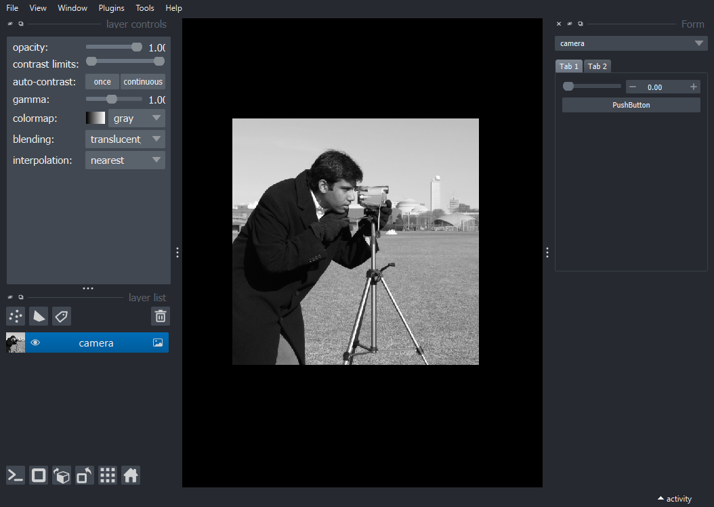
Adding functionality to the widget#
To round this blog post off, we would like to
add some functionality to the widget, e.g., use the widgets from the qtdesigner for something. This has been already been adressed in this blog post, so we will not go into too much detail here.
access the image data inside the widget, which works in a bit peculiar way.
To add functionality, the main idea is to add a function to the widget that is called when a widget emits a signal that something has been done. For instance, for the slider widget, we can add a line in the __init__ function of the widget that connects the slider’s valueChanged signal to a function on_slider_change:
from qtpy.QtWidgets import QWidget
from qtpy.QtCore import QEvent, QObject
from qtpy import uic
from pathlib import Path
class my_custom_widget(QWidget):
def __init__(self, napari_viewer):
super().__init__()
self.viewer = napari_viewer
uic.loadUi(Path(__file__).parent / "./complex_widget.ui", self)
# add magicgui widget to widget layout
self.image_layer_select = create_widget(annotation=Image,
label="Image_layer")
self.layout().insertWidget(0, self.image_layer_select.native)
self.installEventFilter(self)
# connect slider to function
self.horizontal_slider_widget.valueChanged.connect(self.on_slider_change)
def eventFilter(self, obj: QObject, event: QEvent):
if event.type() == QEvent.ParentChange:
self.image_layer_select.parent_changed.emit(self.parent())
return super().eventFilter(obj, event)
def on_slider_change(self):
print(self.horizontal_slider_widget.value())
To be able to access the image layer selected by the magicgui widget, we can do so by accessing the value attribute of the magicgui widget. This attribute will contain the selected layer - in order to access attributes of the layer itself (such as the actual image data), we can access this through self.image_layer_select.value.data. Similarly, we can access features, metadata, etc. We can then use this image data in the on_slider_change function to threshold the image layer:
from qtpy.QtWidgets import QWidget
from qtpy.QtCore import QEvent, QObject
from qtpy import uic
from pathlib import Path
class my_custom_widget(QWidget):
def __init__(self, napari_viewer):
super().__init__()
self.viewer = napari_viewer
uic.loadUi(Path(__file__).parent / "./complex_widget.ui", self)
# add magicgui widget to widget layout
self.image_layer_select = create_widget(annotation=Image,
label="Image_layer")
self.layout().insertWidget(0, self.image_layer_select.native)
self.installEventFilter(self)
# connect slider to function
self.horizontal_slider_widget.valueChanged.connect(self.on_slider_change)
def eventFilter(self, obj: QObject, event: QEvent):
if event.type() == QEvent.ParentChange:
self.image_layer_select.parent_changed.emit(self.parent())
return super().eventFilter(obj, event)
def on_slider_change(self):
image_layer = self.image_layer_select.value
binary_image = image_layer.data > self.horizontal_slider_widget.value()
if 'result of threshold' not in self.viewer.layers:
self.viewer.add_image(binary_image,
name='result of threshold',
opacity=0.5)
else:
self.viewer.layers['result of threshold'].data = binary_image
The result is a widget that will threshold the selected image layer when the slider is moved. You can find the entire code for this example here.
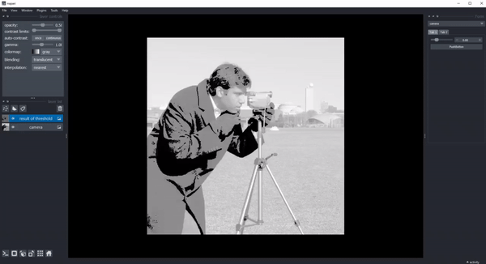
Note: While data attributes of the magicgui widget can can be accessed by
self.image_layer_select.value, the value of many Qt widgets (e.g., sliders, checkboxes, spinboxes, etc) are typically accessed byself.widget_name.value(). This is a bit confusing, but it is what it is.
Conclusion#
What we did in the previous example was, in essence, an implementation of a simple thresholding widget. It is obvious that such simple tasks are much better done by simply using magicgui to save ourselves working with Qt code to begin with. Using the combination of the Qt Designer and magicgui becomes a lot more useful when we want to create more complex widgets with many buttons. The following two criteria are indications that you may want to use the combination of the Qt Designer and magicgui:
There should be feedback to the GUI; e.g., the GUI should change when a button is pressed. This could be the case when a result is calculated and the GUI should display the result.
You need access to the same Python object from different functions. This could be the case when you control a remote device - let’s call it
Microscope- through a Qt widget. In this case, theMicroscopeclass can be part of the the Qt object’s namespace (e.g.,self.microscope = Microscope()). You can then access theMicroscopeobject from any function in the widget, e.g., when a button is pressed.